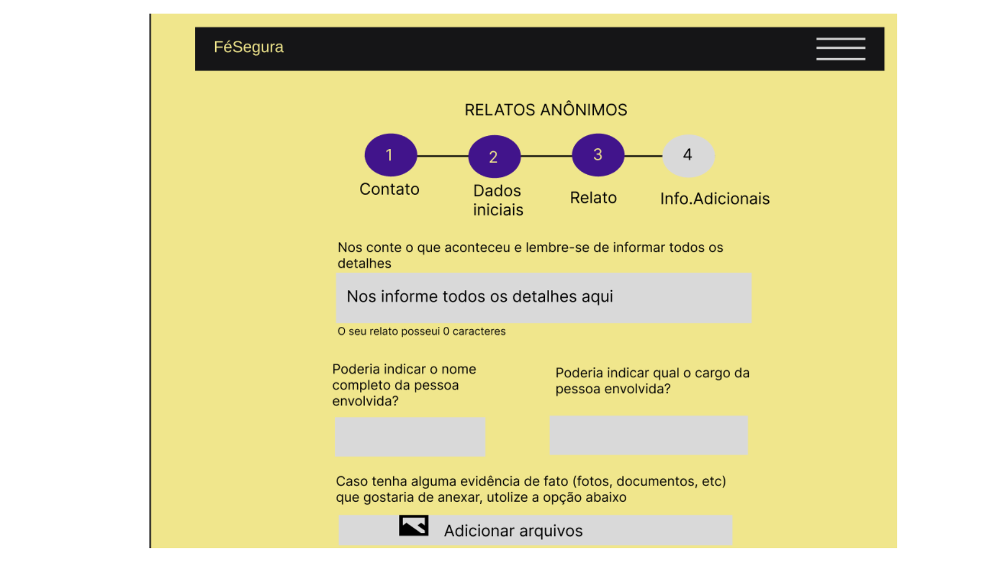
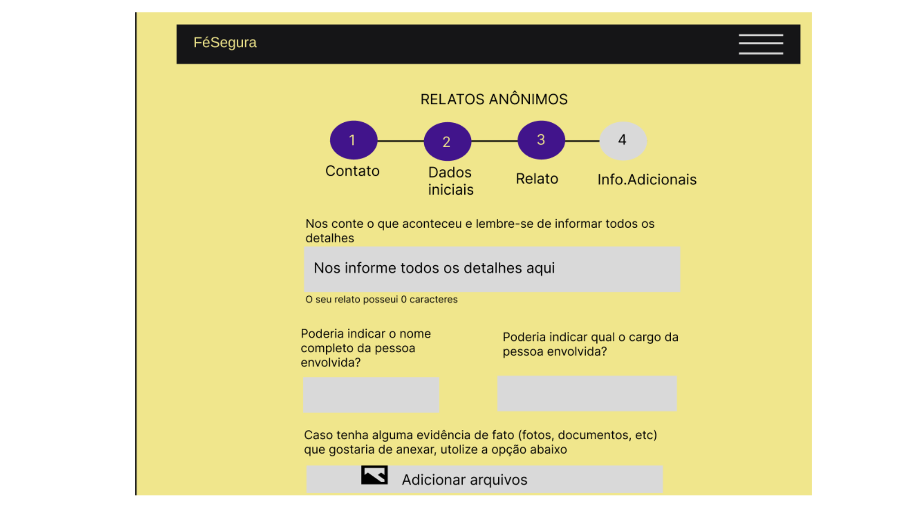

Fé Segura
Guilherme Gabriel Grasel
"Como negar a intolerância religiosa em um país onde terreiros são queimados, atabaques são quebrados e a fé silenciada pela violência?"
"Como negar a intolerância religiosa em um país onde terreiros são queimados, atabaques são quebrados e a fé silenciada pela violência?"
A intolerância religiosa é um problema grave que viola direitos fundamentais e afeta especialmente as religiões afro-brasileiras e de matriz africana, como o candomblé e a umbanda, que enfrentam discriminação e preconceito em várias partes do Brasil. Em Santa Cruz do Sul, RS, apesar da diversidade cultural e religiosa, essas tradições são marginalizadas devido à falta de informação, estereótipos negativos e a ausência de diálogo inter-religioso. Este estudo busca analisar os desafios enfrentados por essas religiões na região, utilizando uma abordagem interdisciplinar que combina sociologia, antropologia e direitos humanos, com métodos qualitativos como entrevistas e observações. O objetivo é sensibilizar a comunidade para a importância de respeitar a diversidade religiosa e promover ações que estimulem o diálogo, a tolerância e a valorização das tradições afro-brasileiras, contribuindo para uma sociedade mais inclusiva e plural.
A pesquisa é relevante por evidenciar que a intolerância religiosa é uma forma grave de violência e discriminação, motivada pela falta de respeito às crenças alheias, frequentemente alimentada pelo fanatismo religioso e pelo ego. Embora em Santa Cruz do Sul não haja registros públicos desse tipo de discriminação, dados nacionais mostram casos significativos, como 111 denúncias em São Paulo, 97 no Rio de Janeiro e 26 no Rio Grande do Sul em 2022, segundo o G1. O projeto busca combater a falta de informação sobre religiões afro-brasileiras, desconstruir preconceitos e orientar sobre como agir diante de situações de intolerância. Como praticante da umbanda, o objetivo é promover conhecimento, reduzir estatísticas de discriminação e fomentar o respeito.
A pesquisa utilizou duas metodologias principais: aplicação de um questionário via Google Forms e realização de uma entrevista presencial. O questionário, com perguntas abertas e fechadas, foi direcionado inicialmente aos irmãos de santo da comunidade de terreiro e, posteriormente, compartilhado em redes sociais como WhatsApp, Instagram e Facebook, alcançando uma amostra representativa. Na segunda etapa, foi realizada uma entrevista presencial com o conselheiro do povo de terreiro de Santa Cruz do Sul, abordando racismo estrutural, racismo religioso e a intolerância enfrentada na região. Os dados do questionário foram analisados por estatística descritiva e análise de conteúdo, enquanto a entrevista foi transcrita e analisada tematicamente. A triangulação dessas fontes proporcionou uma visão abrangente e detalhada do fenômeno investigado.
Apilcação planejada
 

Aplicação executada
O estudo concluiu que a intolerância religiosa contra religiões afro-brasileiras e de matriz africana é predominante em Santa Cruz do Sul, manifestando-se tanto nas ruas quanto pela internet. Observou-se que muitos membros da comunidade de terreiro têm dificuldade em identificar e denunciar atos preconceituosos, frequentemente por medo ou desconhecimento. A pesquisa revelou que 94,4% dos participantes compreendem o conceito de intolerância religiosa, 50% já sofreram discriminação, e 84,7% reconhecem a importância de abordar o tema nas escolas para desconstruir preconceitos desde cedo.
A análise destacou a necessidade de promover palestras e conteúdos educativos sobre religiões afro-brasileiras e de matriz africana, bem como a urgência de políticas públicas que ofereçam proteção e visibilidade às comunidades de terreiro. Também foi apontada a importância de ferramentas técnicas que facilitem denúncias por parte dessas comunidades.
Embora o estudo tenha enfrentado desafios, como o desenvolvimento da aplicação técnica e a carga emocional ao lidar com relatos de discriminação, ele contribui para ampliar a compreensão sobre o preconceito religioso na cidade e reforça a importância de ações contínuas para promover liberdade religiosa, respeito e combate à discriminação.